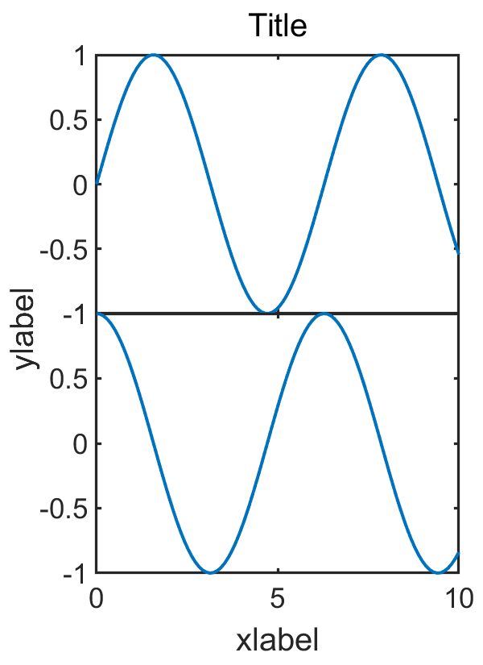

前言
我们在用Matlab的subplot函数绘制图组时可能会发现子图之间的间距不太好看，可以通过set('Position', [l, b, w, h])函数来分别调整，比较麻烦，这里我写了一个函数subplot_adjust来简化这一过程。
用法
function subplots_adjust(row, col, varargin)
Tune the subplot layout.
The parameter meanings (and suggested defaults) are
left = 0.12 # the left side of the subplots of the figure
bottom = 0.138 # the bottom of the subplots of the figure
width = 0.8 # the width of the subplots of the figure
hight = 0.78 # the hight of the subplots of the figure
wspace = 0.12 # the amount of width reserved for space between subplots,
# expressed as a fraction of the average axis width
hspace = 0.1 # the amount of height reserved for space between subplots,
# expressed as a fraction of the average axis height
supPosition = [0.075, 0.08, 0.9, 0.85]
# [left, bottom, width, hight]
# super axes position, which controls position of
# supxlabel, supylabel and suptitle.在用subplot画完图组后，直接在最后面加上subplot_adjust即可，例如：
x = linspace(0, 10);
y1 = sin(x);
y2 = cos(x);
figure('Position', [10, 50, 400, 550]);
subplot(2, 1, 1)
plot(x, y1)
subplot(2, 1, 2)
plot(x, y2)
ax = subplots_adjust(2, 1, 'hspace', 0, 'left', 0.2, ...
'width', 0.75, 'supPosition', [0.1, 0.08, 0.95, 0.85]);
xlabel(ax, 'xlabel')
ylabel(ax, 'ylabel')
title(ax, 'Title')绘制2行1列图组，设置两子图之间纵向间距为0，结果如下：

源码
function ax = subplots_adjust(row, col, varargin)
%% function subplots_adjust(row, col, varargin)
% Tune the subplot layout.
%
% The parameter meanings (and suggested defaults) are::
%
% left = 0.12 # the left side of the subplots of the figure
% bottom = 0.138 # the bottom of the subplots of the figure
% width = 0.8 # the width of the subplots of the figure
% hight = 0.78 # the hight of the subplots of the figure
% wspace = 0.12 # the amount of width reserved for space between subplots,
% # expressed as a fraction of the average axis width
% hspace = 0.1 # the amount of height reserved for space between subplots,
% # expressed as a fraction of the average axis height
% supPosition = [0.075, 0.08, 0.9, 0.85]
% # [left, bottom, width, hight]
% # super axes position, which controls position of
% # supxlabel, supylabel and suptitle.
%
% Example:
% x = linspace(0, 10);
% y1 = sin(x);
% y2 = cos(x);
% figure('Position', [10, 50, 400, 550]);
% subplot(2, 1, 1)
% plot(x, y1)
% subplot(2, 1, 2)
% plot(x, y2)
% ax = subplots_adjust(2, 1, 'hspace', 0, 'left', 0.2, ...
% 'width', 0.75, 'supPosition', [0.1, 0.08, 0.95, 0.85]);
% xlabel(ax, 'xlabel')
% ylabel(ax, 'ylabel')
% title(ax, 'Title')
p = inputParser;
addRequired(p, 'row');
addRequired(p, 'col');
addParameter(p, 'wspace', 0.12);
addParameter(p, 'hspace', 0.1);
addParameter(p, 'left', 0.12);
addParameter(p, 'bottom', 0.138);
addParameter(p, 'width', 0.8);
addParameter(p, 'hight', 0.78);
addParameter(p, 'supPosition', [0.075, 0.08, 0.9, 0.85]);
parse(p, row, col, varargin{:});
left = p.Results.left;
bottom = p.Results.bottom;
width = p.Results.width;
hight = p.Results.hight;
space = [p.Results.wspace, p.Results.hspace];
eachx = (width-(col-1)*space(1)) / col;
eachy = (hight-(row-1)*space(2)) / row;
for i=1:row
for j=1:col
h = subplot(row, col, (i-1)*col+j);
set(h, 'position', [left+(j-1)*(eachx+space(1)), bottom+(row-i)*(eachy+space(2)), eachx, eachy]);
if j ~= 1 && space(1) == 0
set(h, 'YTickLabel', {});
end
if i ~= row && space(2) == 0
set(h, 'XTickLabel', {});
end
end
end
ax = axes('Units', 'Normal', 'Position', p.Results.supPosition, 'Visible', 'off');
ax.XTickLabel = {};
ax.YTickLabel = {};
ax.XLabel.Visible = 'on';
ax.YLabel.Visible = 'on';
ax.Title.Visible = 'on';
end